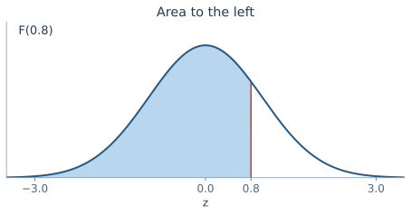

MSC 201 · Reference table
Simplified standard normal table
Every entry is the area to the left: F(z) = P(Z ≤ z). Z has mean 0 and standard deviation 1.
Round a calculated z-score to the nearest tenth, then look up its probability. Probabilities are rounded to three decimal places. Do not interpolate. For a halfway z-score, round away from zero.
For a percentile, find the table probability closest to the requested left-tail probability and read its z-score. If entries are equally close, use the z-score closer to zero. Then use x = μ + zσ.
Right tail: 1 − F(z). Between two cutoffs: F(upper z) − F(lower z).

| z | Area to the left, F(z) |
|---|---|
| -4.0 | 0.000 |
| -3.9 | 0.000 |
| -3.8 | 0.000 |
| -3.7 | 0.000 |
| -3.6 | 0.000 |
| -3.5 | 0.000 |
| -3.4 | 0.000 |
| -3.3 | 0.000 |
| -3.2 | 0.001 |
| -3.1 | 0.001 |
| -3.0 | 0.001 |
| -2.9 | 0.002 |
| -2.8 | 0.003 |
| -2.7 | 0.003 |
| -2.6 | 0.005 |
| -2.5 | 0.006 |
| -2.4 | 0.008 |
| -2.3 | 0.011 |
| -2.2 | 0.014 |
| -2.1 | 0.018 |
| -2.0 | 0.023 |
| -1.9 | 0.029 |
| -1.8 | 0.036 |
| -1.7 | 0.045 |
| -1.6 | 0.055 |
| -1.5 | 0.067 |
| -1.4 | 0.081 |
| -1.3 | 0.097 |
| -1.2 | 0.115 |
| -1.1 | 0.136 |
| -1.0 | 0.159 |
| -0.9 | 0.184 |
| -0.8 | 0.212 |
| -0.7 | 0.242 |
| -0.6 | 0.274 |
| -0.5 | 0.309 |
| -0.4 | 0.345 |
| -0.3 | 0.382 |
| -0.2 | 0.421 |
| -0.1 | 0.460 |
| z | Area to the left, F(z) |
|---|---|
| 0.0 | 0.500 |
| 0.1 | 0.540 |
| 0.2 | 0.579 |
| 0.3 | 0.618 |
| 0.4 | 0.655 |
| 0.5 | 0.691 |
| 0.6 | 0.726 |
| 0.7 | 0.758 |
| 0.8 | 0.788 |
| 0.9 | 0.816 |
| 1.0 | 0.841 |
| 1.1 | 0.864 |
| 1.2 | 0.885 |
| 1.3 | 0.903 |
| 1.4 | 0.919 |
| 1.5 | 0.933 |
| 1.6 | 0.945 |
| 1.7 | 0.955 |
| 1.8 | 0.964 |
| 1.9 | 0.971 |
| 2.0 | 0.977 |
| 2.1 | 0.982 |
| 2.2 | 0.986 |
| 2.3 | 0.989 |
| 2.4 | 0.992 |
| 2.5 | 0.994 |
| 2.6 | 0.995 |
| 2.7 | 0.997 |
| 2.8 | 0.997 |
| 2.9 | 0.998 |
| 3.0 | 0.999 |
| 3.1 | 0.999 |
| 3.2 | 0.999 |
| 3.3 | 1.000 |
| 3.4 | 1.000 |
| 3.5 | 1.000 |
| 3.6 | 1.000 |
| 3.7 | 1.000 |
| 3.8 | 1.000 |
| 3.9 | 1.000 |
| 4.0 | 1.000 |
Rounding is approximate. A displayed 0.000 or 1.000 is rounded; finite normal cutoffs never have exactly zero or one cumulative probability. Beyond z = ±4.0, the corresponding tails also round to 0.000 at this precision.
This table uses 0.1 increments for classroom approximation. Rounding a z-score can change a cumulative probability by about two percentage points near the center. Interval probabilities combine two endpoint approximations.